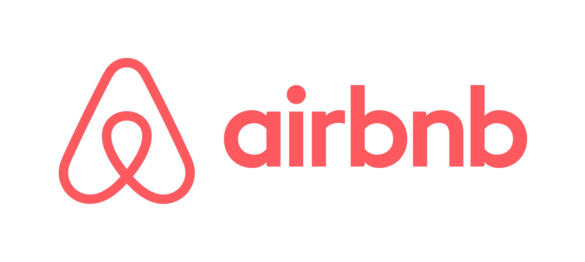
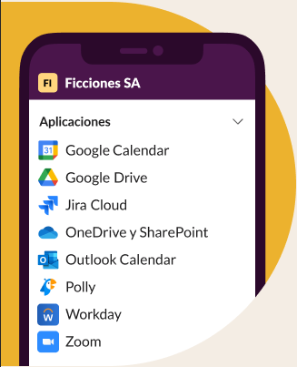

Un buen trabajo en equipo comienza con una sede digital
Reunir a todos tus compañeros, herramientas y comuniación en un mismo lugar te permitirá trabajar de manera más rápida y eficiente que nunca
EMPRESAS DE TODO EL MUNDO YA CONFÍAN EN SLACK
- 


Reúne a tu equipo
Los canales son el corazón de Slack. Son espacios organizados para todo el mundo que contienen todo lo necesario para trabajar. Los canales permiten conectarse entre departamentos, oficinas, zonas horarias e incluso con otras empresas.
Obtener más información sobre los canales
Selecciona cómo quieres trabajar
Slack te otorga la flexibilidad para trabajar cuando, donde y como tú quieras. Puedes chatear, enviar clips de audio y vídeo o unirte a una junta para discutir asuntos en directo.
Obtén más información acerca de la comunicación flexible
Agiliza el trabajo con todas tus herramientas en un mismo lugar
Conectar tus otras aplicaciones de trabajo con Slack te permite ahorrar tiempo al no tener que cambiar entre pestañas. Además, con herramientas eficaces como el Creador de flujos de trabajo, puedes automatizar tareas rutinarias.
Equipos grandes y pequeños confían en Slack
Slack se adapta de forma segura para garantizar la colaboración en las empresas más importantes del mundo.
85%
de usuarios afirma que Slack ha mejorado la comunicación*
86%
creen que su capacidad para trabajar a distancia ha mejorado*
88%
se sienten más conectados con sus equipos*
* Promedio ponderado. Basado en una encuesta de 2707 respuestas de usuarios semanales de Slack en Estados Unidos, Reino Unido, Australia y Canadá, con un margen de error de ± 2 % al 95 % CI (diciembre de 2021).